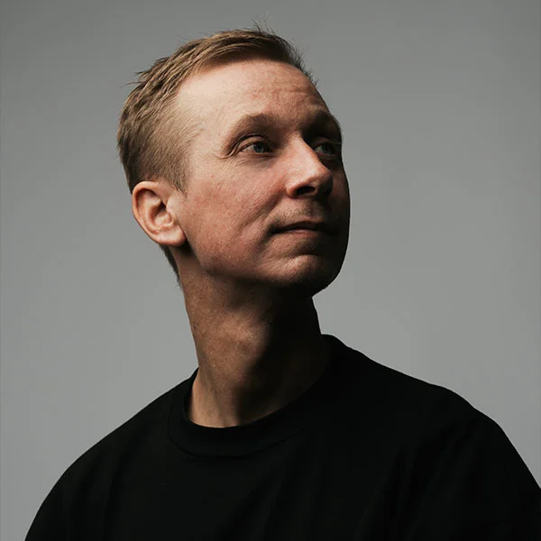

Origens e Desenvolvimento Inicial
A história do psytrance é fascinante e rica, refletindo a evolução da música eletrônica e sua influência cultural ao redor do mundo. O psytrance, ou psicodélico trance, é um subgênero do trance que é conhecido por suas batidas rápidas e seus elementos sonoros complexos e muitas vezes experimentais.
O psytrance começou a emergir no início dos anos 90, com uma influência significativa do trance e da música eletrônica experimental. Os sons psicodélicos e as atmosferas espaciais, comuns em músicas de bandas de rock psicodélico e da cena eletrônica de clubes, foram os precursores do estilo.
A cena psytrance ganhou destaque em Israel, onde DJs e produtores como Infected Mushroom, GMS (Growling Mad Scientists), e Astral Projection ajudaram a definir o gênero. O foco estava em criar experiências sonoras imersivas que poderiam acompanhar festas e raves, muitas vezes realizadas em locais ao ar livre, como praias e desertos.
Vertentes
PROGRESSIVE PSYTRANCE
O Progressive Psytrance é um subgênero do Psytrance que se destaca por seu estilo mais sofisticado e evolutivo em comparação com outras formas de psytrance. Ele combina elementos do trance psicodélico com influências de outros gêneros eletrônicos, como o progressive house e o techno.
Festivais


Artistas
Electric Universe
Electric Universe, também conhecido como Boris Blenn, tem quebrado barreiras musicais desde o início dos anos 90 e é aclamado por muitos como um dos pioneiros originais do gênero psytrance. O contador de histórias sonoras entrelaça contos de intriga musical narrados por sabedorias antigas e melodias modernas pontuadas com quedas dinâmicas que cativam plateias ao redor do globo.
Vegas
Dono de uma mente artística brilhante que o consagrou no Brasil e no mundo através da sua personalidade carregada pelo groove brasileiro, Paulo Vilela hasteou a bandeira #produtonacional pelos cinco continentes em 18 países, se apresentando nos principais festivais e clubes com a potência Vegas.
Phaxe
Kevin Josefsen aka Phaxe passou do anonimato ao protagonismo internacional da elite do progressive trance mundial em pouco tempo. Com um ar de leveza, carisma e simpatia nos palcos, e fora deles também, Phaxe se tornou uma das grandes figuras do progressive trance em todo mundo, sendo requisitado por suas ondas sonoras vibrantes e singulares.